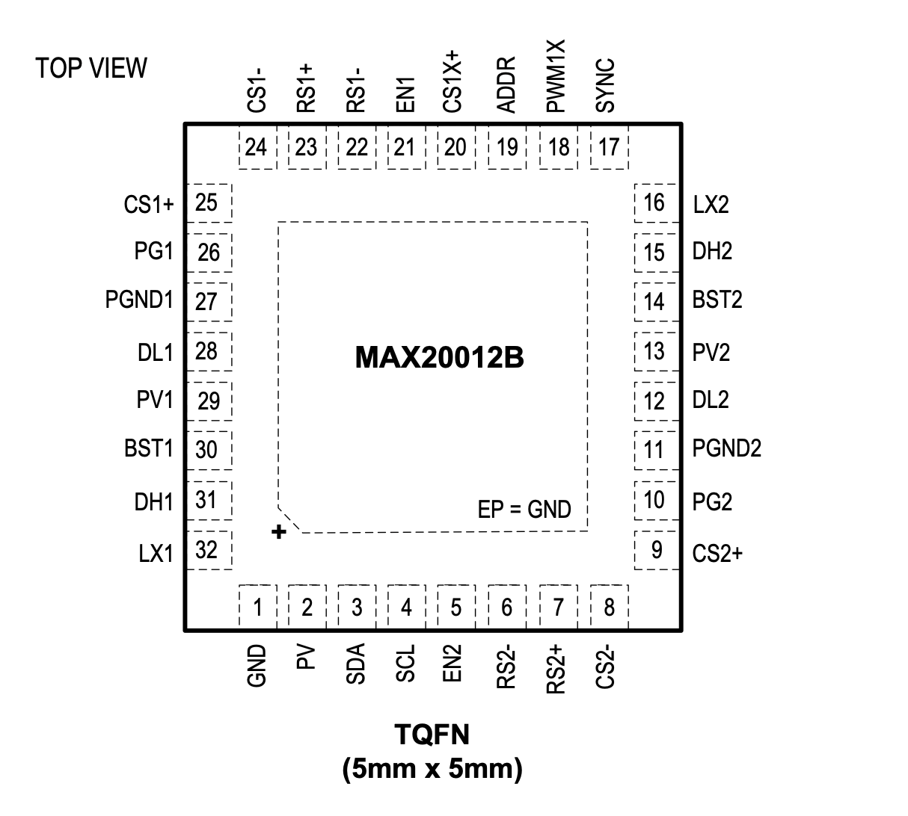

MAX20012

Pin Description
| PIN | NAME | FUNCTION |
|---|---|---|
| 1 | GND | Analog Ground |
| 2 | PV | Analog Input Supply. Connect a 1μF ceramic capacitor from PV to GND. Connect PV to PV1 and PV2 through a 10Ω resistor. |
| 3 | SDA | I2C Data I/O |
| 4 | SCL | I2C Clock Input |
| 5 | EN2 | Active-High Digital Enable Input for DCDC2. Drive EN2 high for normal operation. Connect EN2 to GND if DCDC2 is not used. |
| 6 | RS2- | DCDC2 Remote Voltage-Sense Negative Input |
| 7 | RS2+ | DCDC2 Remote Voltage-Sense Positive Input |
| 8 | CS2- | Current-Sense Negative Input for DCDC2. Connect CS2- to the negative side of the current-sense element. |
| 9 | CS2+ | Current-Sense Positive Input for DCDC2. Connect CS2+ to the positive side of the current-sense element. |
| 10 | PG2 | Open-Drain DCDC2 Reset Output. This output remains low for 120μs after the output has reached its regulation level To obtain a logic signal, pull up PG2 with an external resistor. |
| 11 | PGND2 | Power Ground for DCDC2 |
| 12 | DL2 | Low-Side Gate Drive for DCDC2 |
| 13 | PV2 | Input-Voltage Pin for DCDC2. Bypass this pin with enough input capacitance to supply current to the buck controller. Connect PV1 and PV2 together externally |
| 14 | BST2 | Bootstrap Capacitor for High-Side Driver of Buck 2. Connect a 0.1μF from LX2 to BST2. |
| 15 | DH2 | High-Side Gate Drive for DCDC2 |
| 16 | LX2 | Inductor Connection for DCDC2. Connect LX2 to the switched side of the inductor. LX2 serves as the lower supply rail for the DH2 high-side gate driver. |
| 17 | SYNC | SYNC I/O. When configured as an input, connect SYNC to GND or leave unconnected to enable skip-mode operation under light loads. Connect SYNC to PV or an external clock to enable fixed- frequency forced-PWM mode operation. When configured as an output, connect SYNC to other devices’ SYNC inputs. |
| 18 | PWM1X | PWM Output for Optional 2nd Phase of DCDC1. Connect to the MAX15492 PWM pin. If unused, leave PWM1X unconnected. |
| 19 | ADDR | I2C Address Select. Connect to GND or PV to select between two different I2C addresses |
| 20 | CS1X+ | Current-Sense Positive Input for the 2nd Phase of DCDC1. Connect CS1X+ to the positive side of the current-sense element. To disable phase 2, short CS1X+ to PV |
| 21 | EN1 | Active-High Digital Enable Input for DCDC1. Drive EN1 high for normal operation. Connect EN1 to GND if DCDC1 is not used. |
| 22 | RS1- | DCDC1 Remote Voltage-Sense Negative Input |
| 23 | RS1+ | DCDC1 Remote Voltage-Sense Positive Input |
| 24 | CS1- | Current-Sense Negative Input for DCDC1. Connect CS1- to the negative side of the current-sense element. |
| 25 | CS1+ | Current-Sense Positive Input for DCDC1. Connect CS1+ to the positive side of the current-sense element. |
| 26 | PG1 | Open-Drain DCDC1 Reset Output. This output remains low for 120μs after the output has reached its regulation level To obtain a logic signal, pull up PG1 with an external resistor. |
| 27 | PGND1 | Power Ground for DCDC1 |
| 28 | DL1 | Low-Side Gate Drive for DCDC1 |
| 29 | PV1 | Input-Voltage Pin for DCDC1. Bypass this pin with enough input capacitance to supply current to the buck controller. Connect PV1 and PV2 together externally. |
| 30 | BST1 | Bootstrap Capacitor for High-Side Driver of DCDC1. Connect a 0.1μF from LX1 to BST1. |
| 31 | DH1 | High-Side Gate Drive of DCDC1 |
| 32 | LX1 | Inductor Connection for DCDC1. Connect LX1 to the switched side of the inductor. LX1 serves as the lower supply rail for the DH1 high-side gate driver. |
| - | EP | Exposed Pad. Connect EP to ground. Connecting the exposed pad to ground does not remove the requirement for proper ground connections to PGND1, PGND2, and GND. The exposed pad is attached with epoxy to the substrate of the die, making it an excellent path to remove heat from the IC. |